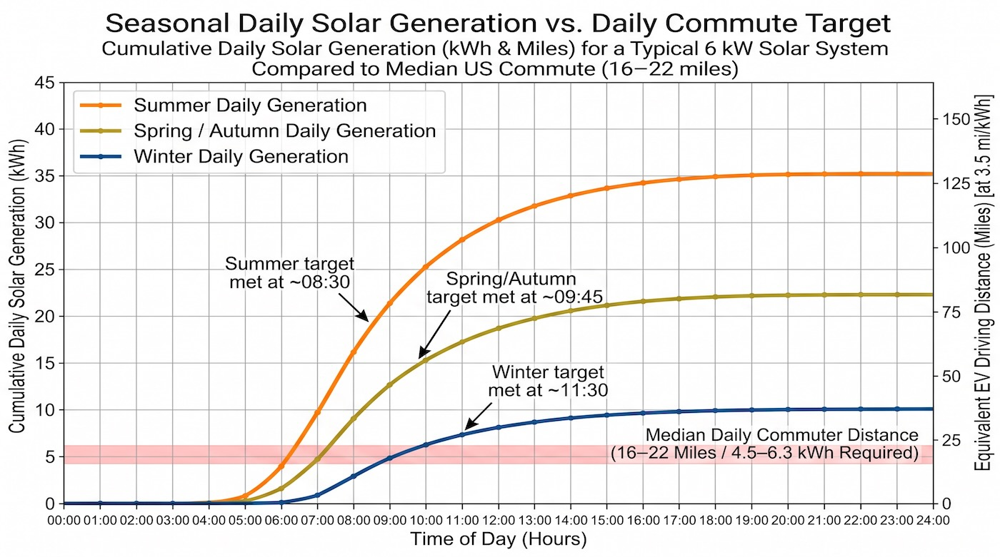
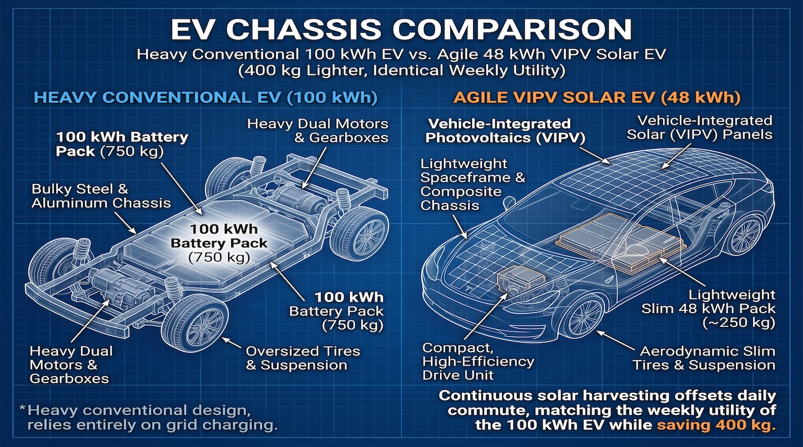
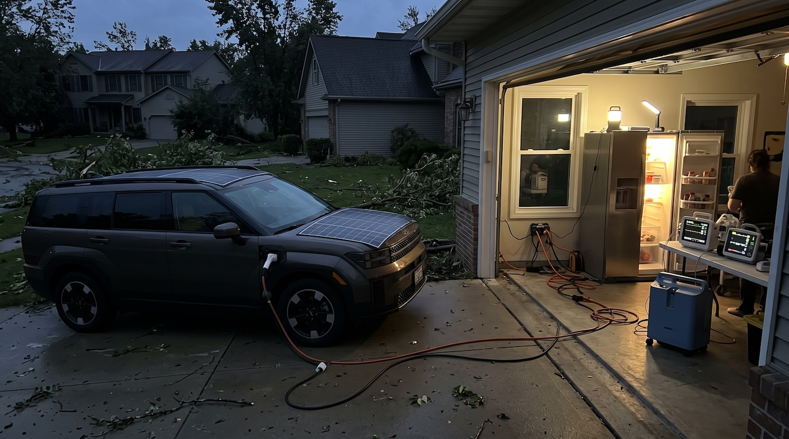

1. The New Math of Vehicle-Integrated Photovoltaics (VIPV)
For over a decade, automotive skeptics dismissed solar panels on passenger cars with back-of-the-envelope math: an average car roof has roughly 2.0 to 2.5 square meters of usable upward-facing area. Under older 15% efficiency silicon wafers, that space yielded a meager 200–250 watts of peak power—scarcely enough to add 3 to 4 miles of range over an entire sunny afternoon.
In 2026, three converging technological breakthroughs have fundamentally rewritten those physics:
- Commercial Tandem Solar Cells: Perovskite-on-silicon tandem cells have surpassed 28% to 32% operational efficiency, unlocking 400 to 520 watts of peak power from standard roof, hood, and rear-hatch geometries.
- Hyper-Efficient Low-Drag Platforms: Modern aerodynamic EV platforms engineered with drag coefficients under $C_d \le 0.20$ and lightweight composites require far less energy per mile—often achieving 4.8 to 5.8 miles per kWh ($10.7–13 \text{ kWh}/100 \text{ km}$) instead of the 2.5 to 3.0 miles/kWh typical of heavy electric SUVs.
- Automotive MPPT Micro-Boost Inverters: Next-generation Maximum Power Point Tracking (MPPT) power electronics step variable 30V–60V solar module voltage directly into 400V or 800V high-voltage traction batteries with greater than 98% conversion efficiency, even in partial tree shade.
When an aerodynamic electric car travels nearly 5 miles per kWh, harvesting 2.5 to 3.5 kWh from sunlight each day yields 12 to 18+ miles (19 to 29 km) of completely free, self-generated driving range every single day.
The average passenger vehicle spends 95% of its lifespan parked. For millions of daily commuters, that vehicle sits outdoors in open corporate parking lots, park-and-ride train stations, or residential driveways. A solar roof converts those passive idle hours into an active, off-grid energy harvest.
According to transportation census data across North America and Western Europe, the median daily roundtrip commute is between 16 and 22 miles. That means a vehicle equipped with a modern VIPV solar roof can cover 60% to 100% of an average driver's routine commuting needs completely off-grid for six to nine months of the year—without ever touching a wall plug.

The Overlooked Benefit: Solar-Powered Cabin Venting
Beyond direct traction propulsion, solar roofs solve one of the most wasteful hidden energy sinks in modern cars: cabin thermal runaway.
When parked under the direct summer sun, vehicle interior temperatures routinely soar past 60°C (140°F). When the driver returns and cranks the climate control, the air conditioning compressor pulls a massive 4 to 6 kW spike to bring the cabin down to comfort levels, dumping 1.5 to 2.5 kWh of valuable traction battery energy in the first 15 minutes of driving alone.
An integrated solar roof powers continuous, whisper-quiet cabin exhaust fans and solid-state thermoelectric ventilation entirely from sun rays. The cabin remains near ambient temperature all day long, completely eliminating the thermal shock penalty without consuming a single watt of battery reserves.
2. Breaking the Weight Paradox: How Solar Enables Smaller, Better Batteries
The contemporary electric vehicle industry is locked in a destructive weight-and-range spiral:
The Fear of Being Stranded Demands Huge Packs
Drivers fear running out of charge on rare road trips ("range anxiety"), so automakers feel compelled to install massive 85 to 120 kWh battery packs into standard consumer vehicles.
Colossal Deadweight Punishes Vehicle Efficiency
A 100 kWh liquid-cooled battery pack weighs between 600 and 850 kg (1,300 to 1,900 lbs) by itself. Hauling that mountain of deadweight requires heavier steel chassis rails, stiffer multi-link suspension, oversized brake rotors, and wider tires with higher rolling resistance.
Inefficiency Demands Even Larger Batteries
Because the car has ballooned into a 2.5-ton behemoth, its energy consumption deteriorates to 300–400 Wh per mile, which in turn demands an even larger battery just to maintain acceptable highway range.
The In-Transit Solar Cushion
A solar roof breaks this vicious cycle by introducing continuous energy input while in transit. When cruising on the highway or navigating city traffic under daylight, a vehicle's auxiliary electronics—central touchscreens, digital instrument clusters, ADAS cameras, compute units, power steering pumps, audio amplifiers, and headlights—draw between 350 and 600 watts of continuous parasitic power.
In a standard EV, that parasitic drain is pulled directly from the high-voltage traction pack—much like rogue background services quietly sapping battery power in an unmonitored OS (an issue explored in our deep-dive on stopping background apps without ADB or root). In a VIPV solar EV, a 450W solar roof actively cushions that baseline draw in real-time. By supplying the vehicle's onboard brains directly from the sun, the net battery discharge rate is flattened.

The Virtuous Downsizing Spiral
Because the solar roof continuously tops up the vehicle during daytime parking and transit, drivers no longer need a bloated chemical buffer for everyday life. Automakers can safely right-size the battery pack from 85 kWh down to 48–55 kWh without compromising daily range:
- Shedding 350 to 450 kg (770–1,000 lbs): A dramatically lighter vehicle accelerates faster, handles with sports-car agility, stops in shorter distances, and reduces tire micro-plastic wear by up to 30%.
- Massive Consumer Cost Savings: Traction batteries account for 30% to 40% of the entire bill-of-materials of an electric car. Trimming 35 kWh saves $3,500 to $5,500 in manufacturing costs, finally making EVs affordable to middle-income families.
- Mineral Stewardship: Less lithium, cobalt, nickel, and graphite mining per car means the same global battery supply chain can produce nearly double the number of clean vehicles, drastically accelerating global decarbonization.
- Faster Plug-In Times: When drivers do take road trips, a lighter 50 kWh battery pack charges from 10% to 80% on standard 50–100 kW highway fast chargers in just 25 to 30 minutes, freeing up charging infrastructure twice as fast.
3. Relieving Pressure on the Electrical Grid: The Distributed Solution
The greatest bottleneck to mass electric vehicle adoption is not electric generation capacity—it is localized distribution infrastructure.
The 6:00 PM "EV Duck Curve" Crisis
Consider what happens in a typical suburban neighborhood when electric vehicle adoption reaches 60%. Hundreds of commuters arrive home from work between 5:30 PM and 7:00 PM. They simultaneously plug their vehicles into 7.4 kW or 11 kW Level 2 wallboxes while turning on induction cooktops, heat pumps, ovens, and air conditioning.
This massive, synchronized demand spike overwhelms neighborhood step-down transformers, degrades local grid power factor, and forces regional utilities to fire up dirty, expensive fossil-fuel "peaker" plants to prevent localized brownouts.
Upgrading every neighborhood transformer and subterranean copper feeder cable to handle concurrent fast charging will cost hundreds of billions of dollars and take decades of disruptive street excavation. We need generation that happens off-grid, at the point of consumption.
Point-of-Use Harvesting Bypasses the Grid
Solar roofs harvest clean solar energy directly on top of the car between 10:00 AM and 3:30 PM, precisely when the vehicle is parked away from home:
- Zero Transmission & Distribution (T&D) Losses: Utility grid power loses between 5% and 10% of its total energy as heat through long-distance high-voltage lines and step-down transformers. Solar energy generated on a car roof travels less than two meters of shielded cabling directly into the battery pack with negligible loss (≤ 1.5%).
- 25+ Gigawatt-Hours of Off-Grid Energy: If 10 million commuter cars in a region generate an average of 2.5 kWh per day from their solar roofs, that represents 25 gigawatt-hours of clean energy injected directly into transport every single day—without touching a single substation transformer.
- Equity for Street & Apartment Parkers: Millions of apartment tenants and urban residents do not have access to dedicated home wallboxes or private garages. For city dwellers driving moderate weekly distances, a solar-roof EV offers true freedom from commercial charging station lines.
4. Transforming Cars into Virtual Power Plants: Bidirectional V2G & V2H
The most radical evolution of electric cars is their shift from passive electricity consumers into active, decentralized power nodes.
When an EV combines a high-efficiency solar roof with bidirectional charging (Vehicle-to-Grid / V2G and Vehicle-to-Home / V2H), the car becomes a mobile energy storage and generation station that actively earns money for its owner while stabilizing the public grid.
The Net-Positive Commuter Cycle
Consider a typical workday scenario for an office worker:
- Morning Commute: The driver travels 8 miles to the office, consuming roughly 1.6 kWh.
- Daytime Solar Harvest: The car sits in an open company parking lot under clear skies for eight hours. Over that period, the 480W solar roof generates 3.2 kWh of clean electricity.
- Net-Positive State: When the driver returns to the car at 5:00 PM, the vehicle holds more energy than when it left the driveway in the morning.
- Evening Discharge: After driving 8 miles back home, the owner connects the car to a bidirectional home wallbox at 6:00 PM—during the utility's most expensive, highest-stress peak demand window.
Instead of pulling electricity from the grid, the vehicle injects 1.5 to 2.5 kWh of excess solar energy back into the house (V2H) to run cooking appliances and air conditioning, or feeds power directly into the neighborhood grid (V2G) at peak tariff rates ($0.35–$0.55/kWh in many jurisdictions).
Aggregated across hundreds of thousands of vehicles via automated Virtual Power Plant (VPP) algorithms, parked solar EVs act as a gigantic distributed peaking battery. They eliminate the need for fossil-fuel peaker plants, prevent blackouts during summer heatwaves, and pay their owners dividends.

Disaster Resilience: The Permanent Off-Grid Lifeline
During severe climate catastrophes—hurricanes, floods, ice storms, or earthquake-triggered grid failures—standard electric cars and internal combustion vehicles share the exact same fatal flaw: when the grid dies, refueling is impossible. Gas pumps cannot pump without electricity, and public EV chargers go dark.
A solar-equipped electric car is fundamentally immune to this vulnerability:
- Self-Regenerating Island Microgrid: Even if regional high-voltage transmission lines remain collapsed for weeks, the solar roof continues to trickle charge into the battery bank every day the sun rises.
- Emergency Life Support: Through built-in 120V/240V AC Vehicle-to-Load (V2L) outlets, the car can indefinitely power essential survival hardware: medical refrigeration for insulin, home oxygen concentrators, Starlink satellite dishes, emergency radios, and water filtration pumps.
- Guaranteed Emergency Mobility: The vehicle guarantees that you always have 15 to 25 miles of emergency evacuation range renewed every day, ensuring your family is never trapped in a disaster zone.
5. Engineering Realities & The 2026 Technological Horizon
If solar roofs offer such overwhelming advantages, why hasn't every automaker made them standard equipment? Overcoming historic engineering barriers required several critical manufacturing milestones:
Compound-Curved Glass Lamination
Automotive roofs are compound 3D curved surfaces. Traditional brittle silicon wafers crack when bent. Modern manufacturing employs flexible, shingled solar cell ribbons embedded between dual-layer chemically strengthened safety glass, matching the exact aerodynamic curvature of modern vehicles without optical distortion.
Thermal Coefficient Optimization
Solar cells lose efficiency as surface temperatures rise under blistering summer heat (typically losing ~0.35% power per °C above 25°C). Modern automotive VIPV architectures utilize passive rear micro-ventilation channels and wide-bandgap Silicon Carbide (SiC) inverters that maintain high conversion efficiency even in extreme 45°C (113°F) desert ambient conditions.
Zero Weight Penalty vs. Glass Moonroofs
Nearly all premium electric cars today feature panoramic tinted glass roofs that weigh 25 to 40 kg. Integrating thin-film photovoltaic cells directly into that structural glass laminate adds virtually zero net mass, transforming what was previously inert deadweight into an active energy harvester. Real engineering progress stems from holistic architecture and ergonomic restraint—a design philosophy we also explored in our concept for a tactile clamshell communicator flagship and guides on turning Android hardware into desktop workstations.
Real-World Production Pioneers
The viability of VIPV has already been proven across multiple automotive generations:
- Toyota Prius Prime: Toyota's factory solar roof option proved that even a compact 180W array could contribute up to 3.7 to 4.0 miles of daily charge and maintain cabin ventilation.
- Hyundai Ioniq 5 & Sonata Hybrid: Hyundai's integrated roof solar module reliably harvests over 1,000 to 1,500 km of supplementary driving range per year in European and Korean real-world tests.
- Aptera & Lightyear: Experimental and purpose-built solar electric vehicles with hyper-efficient aerodynamics ($C_d \le 0.13$) demonstrated that cars can achieve 30 to 40 miles of daily solar generation, unlocking true "never-plug-in" urban driving.
- Commercial Fleet Trailers: Major logistics fleets now install multi-kilowatt flexible solar arrays across refrigerated freight trailers, completely replacing noisy diesel auxiliary generators and saving thousands of gallons of fuel annually.
6. Technical Comparison: Conventional Heavy EV vs. VIPV Solar EV
The table below illustrates the stark engineering contrast between a standard heavy long-range electric vehicle and a modernized, right-sized VIPV solar electric vehicle:
| Specification & Metric | Conventional Heavy EV (e.g. Standard 90 kWh SUV) | Modern VIPV Solar EV (Right-Sized 50 kWh Architecture) | VIPV Engineering Advantage |
|---|---|---|---|
| Traction Battery Capacity | 85 – 100 kWh | 48 – 55 kWh | 45% smaller battery pack; huge mineral savings |
| Battery Pack Mass | 620 – 780 kg (1,360 – 1,720 lbs) | 320 – 370 kg (705 – 815 lbs) | ~350 kg (770 lbs) lighter curb weight |
| Real-World City Efficiency | 3.0 – 3.3 mi/kWh (19 – 21 kWh/100km) | 4.8 – 5.6 mi/kWh (11 – 13 kWh/100km) | Up to 55% higher propulsion efficiency |
| Daily Solar Harvest | 0 kWh / day | 2.2 – 3.4 kWh / day (sunny climate) | 11 – 18 miles of free, self-generated range daily |
| Annual Grid Electricity (12k mi) | ~3,800 kWh from grid | ~1,200 – 1,600 kWh from grid | Saves over 2,200 kWh of grid demand per car/year |
| Annual Charging Expenses | $700 – $1,200 / year | $200 – $380 / year | 65% to 75% reduction in recurring fuel costs |
| 6:00 PM Peak Grid Impact | High (demands 7–11 kW simultaneously) | Zero to Net-Positive (injects power via V2G) | Flattens neighborhood transformer load spikes |
| Blackout / Disaster Utility | Inert once battery is depleted | Self-regenerating microgrid + 240V V2L | Survival-grade energy independence |
7. Frequently Asked Questions
No. Modern VIPV systems utilize multi-channel MPPT (Maximum Power Point Tracking) controllers and bypass diodes grouped in discrete cell clusters. If a tree branch or building overhang casts shade across the rear quarter of the roof, only that specific submodule drops in output, while the unshaded cells continue delivering optimal power. Furthermore, diffuse ambient daylight on overcast days still produces 20% to 35% of peak solar output.
Solar roofs actively generate energy during daytime highway driving and outdoor parking, covering continuous parasitic loads (infotainment, sensors, climate venting) and adding 10 to 20 miles of range daily. Because the car continually recharges itself off-grid, drivers do not need a massive 100 kWh buffer for routine commuting, allowing battery packs to be right-sized to 48–55 kWh, saving 350+ kg of vehicle weight.
With modern automated glass lamination, an integrated solar roof option adds approximately $1,200 to $1,800 to an electric vehicle's retail price. For an average commuter generating 3,500 to 4,500 miles of solar energy per year at prevailing electricity rates ($0.24–$0.38 per kWh at public or peak residential chargers), the solar roof pays for itself in 3 to 5 years—well within the standard vehicle ownership lifecycle.
Automotive solar roofs are encapsulated beneath the same 3.2mm to 4.0mm tempered and chemically strengthened laminated safety glass used in standard panoramic moonroofs. They are rigorously tested to pass FMVSS automotive rollover safety standards and severe hail impact certifications (withstanding 25mm to 35mm ice spheres fired at over 70 mph without micro-cracking).
Yes. Unlike older 12V auxiliary trickle setups, modern VIPV architectures feature high-efficiency bidirectional DC-to-DC boost converters capable of stepping variable 30V–60V solar module voltage directly into the 400V or 800V high-voltage traction bus while the vehicle is in motion.
One of the most persistent complaints among EV owners who travel frequently is "vampire drain" over weeks of airport parking, which can deplete batteries and leave drivers stranded with a flat battery upon return. A solar roof permanently counteracts phantom drain, ensuring the vehicle maintains a full state of charge indefinitely whenever parked outdoors.